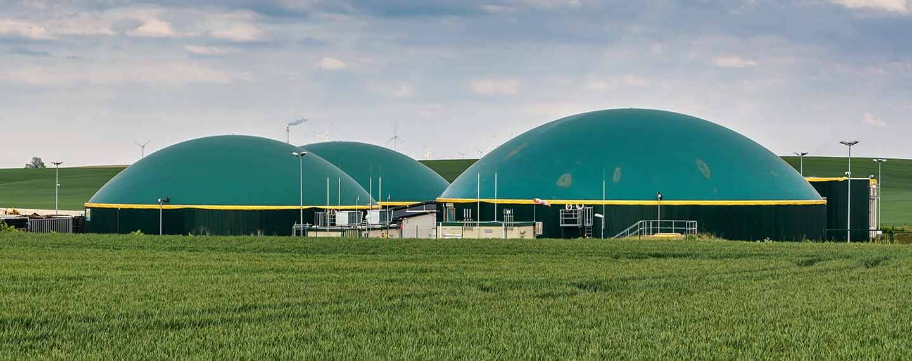

En cifras de la Superintendencia de Servicios Públicos y Domiciliarios - Superservicios, se estima
que entre el 60% y 70% de los residuos sólidos del país se pueden aprovechar por medio del
compostaje. Además, se estima que 40% de la basura
diaria que se genera es materia orgánica.
Se trata de una técnica mediante la cual se crean las condiciones necesarias para las
que a partir de residuos orgánicos los organismos descomponedores fabriquen un abono de
elevada calidad.
¿Cómo preparar el compostaje?
- La mezcla debe elaborarse con varias capas de residuos. La primera, la de
más abajo,
debe tener materiales gruesos y ricos en celulosa, por ejemplo hojas,
cortezas o ramas;
la segunda debe contener residuos de alimentos verdes; y para la tercera, se
recomienda
incluir elementos ricos en nitrógeno, como por ejemplo el estiércol de vaca
o de oveja.
- No olvides añadir una capa fina de entre dos o cinco centímetros de tierra
y, si es el
caso, ingredientes como cáscaras de huevo troceadas o restos de algas. Este
tipo de
productos contienen un alto contenido de carbonatos que favorecen la buena
salud de los
cultivos y la tierra en general.
El biometano es un tipo de gas natural renovable obtenido a
partir del tratamiento de
residuos.
Este gas es similar al gas fósil que se encuentra en la naturaleza y por tanto, puede
sustituirlo.
Es bio porque se produce a partir de la degradación de residuos orgánicos.
Tiene las mismas propiedades y ventajas que el gas natural frente a otros combustibles
fósiles, como son menos emisiones de óxidos de nitrógeno (NOx) y partículas (causantes,
entre otros, de la mala calidad del aire), y es neutro en emisiones de CO2, por lo que
contribuye a descarbonizar el sector gasista y, por tanto, a luchar contra el cambio
climático.
